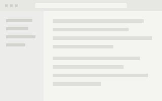

09:12
不用新建，不用起名，不用打标签，不用打开它。
Nothing to create, name, tag, or open.
macOS · Windows · 识别都在本机 · 源码公开，禁止商用
macOS · Windows · recognition runs locally · source-available, noncommercial
这一天你没有为其中任何一条动过手。
You did not lift a finger for any of these.
没有「新建记录」这个按钮。
There is no “new entry” button.
CtrlAlt + A 框选 · S 整屏 · V 录音（macOS 上 CmdShift） CtrlAlt + A region · S full screen · V record (CmdShift on macOS)
标题、一句话摘要、归到哪一天，软件自己写。你只管往里扔。
The title, the one-line summary, which day it belongs to — written for you. You just let things land.

买牛奶、修自行车的闸线。Milk. Fix the brake cable.
为什么 SQLite 不需要服务器Why SQLite doesn't need a server
example.com“后端联调排在本周四，前端先按 mock 走。”“Back-end integration is Thursday. Front-end runs on mocks.”
从 Slackfrom Slack明天十点和产品团队开会，第三季度预算和路线图。10am with product tomorrow — Q3 budget and roadmap.
“Dell ultrawide monitor p3425we”
从 Chromefrom Chrome每天 08:00，昨天的摘要自己写好，弹一句通知。
At 08:00 each day, yesterday's summary has written itself.
一句话问它。答案标着依据的第几条。
Ask in a sentence. Every claim carries the record it came from.
上周那个 Postgres 报错是怎么回事？What was that Postgres error last week?
9 月 2 日你截到 duplicate key value violates unique constraint①，当晚说要把迁移脚本回滚重跑②。第二天剪贴板里出现了 ON CONFLICT DO NOTHING③。
On 2 September you captured duplicate key value violates unique constraint①, and that evening said you'd roll the migration back②. The next day ON CONFLICT DO NOTHING came through your clipboard③.
检索在本地。不联网，不用模型。
Retrieval is local. No network, no model.
依据Cited
“ON CONFLICT DO NOTHING”
它只在你动手的那一下记：复制、截图、收藏、说话、拖进来。别的时候它什么都不做。
It records at the moment you act — a copy, a capture, a save, a sentence, a drop. The rest of the time it does nothing.
浏览器扩展平时什么都不做，只有一次保存手势发生之后才去读页面。
The extension does nothing until a save gesture has actually happened; only then does it read the page.
文字识别和语音转写都是本地引擎，装完断网也能用。一张 2560×1440 的截图约 0.8 秒。
Text and speech recognition are local engines; unplug the network and they still run. About 0.8 s for a 2560×1440 screenshot.
一天一个索引文件，原图、原音、原文件在旁边。没有云，没有账号。
One index file per day, with the original images, audio and files beside it. No cloud, no account.
只有软件替你写的字：标题、摘要、问的作答。交给你选的 AI 服务。不配也能用。
Only the words written for you: titles, summaries, answers — sent to the AI service you pick. Configure nothing and it still runs.
Claude · OpenRouter · Ollama 本地 · 任何 OpenAI 兼容接口
Claude · OpenRouter · Ollama locally · any OpenAI-compatible endpoint
还没有安装包。从源码跑：
No installer yet. From source:
git clone https://github.com/jiaazhaoo/briffy.git
cd briffy
npm install
npm start英文语音和中英文字识别已内置，断网可用。macOS 需要屏幕录制和麦克风权限。
English speech and Chinese/English text recognition are bundled; works offline. macOS needs Screen Recording and Microphone.